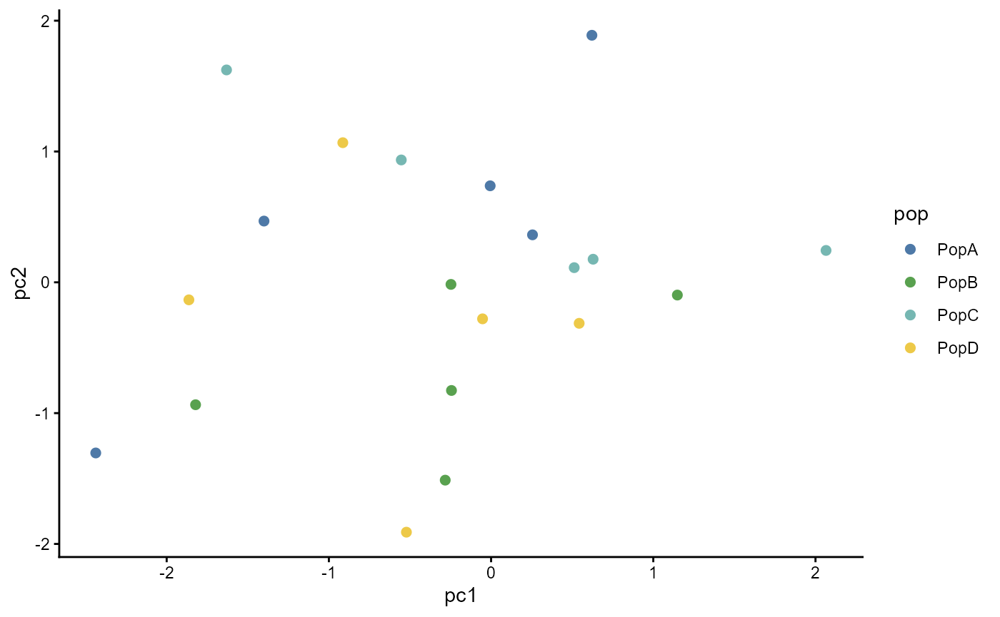

ggpop focuses on population-genomics categorical
variables, so the palette API is discrete-only. It follows the tidyplots
color-scheme idea: pass a named scheme or hex vector, downsample extra
colours, and interpolate when more categories are requested.
Built-in schemes
ggpop_palette(4, "population")
#> [1] "#4E79A7" "#59A14F" "#76B7B2" "#EDC948"
ggpop_palette(8, "admixture")
#> [1] "#4E79A7" "#F28E2B" "#E15759" "#76B7B2" "#EDC948" "#9C755F"
#> [7] "#2F4B7C" "#FF7C43"
ggpop_palette(5, "manhattan")
#> [1] "#4E79A7" "#F28E2B" "#E15759" "#76B7B2" "#EDC948"ggplot scales
df <- data.frame(
pop = rep(c("PopA", "PopB", "PopC", "PopD"), each = 5),
pc1 = rnorm(20),
pc2 = rnorm(20)
)
ggplot2::ggplot(df, ggplot2::aes(pc1, pc2, colour = pop)) +
ggplot2::geom_point(size = 2) +
scale_colour_ggpop("population") +
ggplot2::theme_classic()
Custom palettes
my_pop_colors <- new_pop_palette(
c("#4E79A7", "#F28E2B", "#59A14F", "#E15759"),
name = "my population palette"
)
ggpop_palette(6, my_pop_colors)
#> [1] "#4E79A7" "#B0855C" "#D39132" "#779D47" "#8F8353" "#E15759"